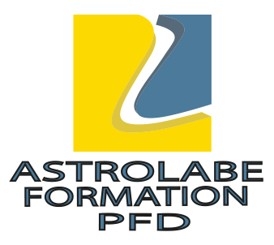

Présentation de la formation
Voici une page web présentant la formation dans le numérique et l'informatique
Présentation :
- Titre : PSIN
- Du 18 Mars au 27 Juillet 2026
- Astrolabe Formation

Mon calendrier :
- Réunions
- Bilan intermédiaire
Lundi 4 mai
- Stage
- Bilan final
Mardi 17 juillet
Objectifs personnels :
- Apprendre le langage HTML
- Comprendre le langage CSS
- Etre capable de créer un site propre seul
- Réussir ma formation
Liens :